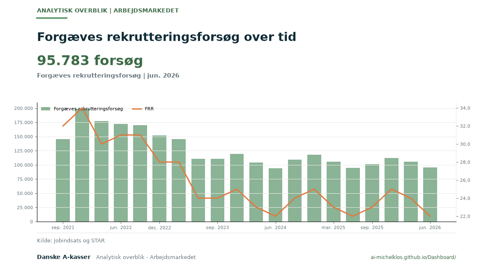

Forgæves rekrutteringsforsøg over tid
95.783 forsøg | Forgæves rekrutteringsforsøg | jun. 2026. Se grafen i Analytisk overblik - Arbejdsmarkedet.

95.783 forsøg | Forgæves rekrutteringsforsøg | jun. 2026. Se grafen i Analytisk overblik - Arbejdsmarkedet.
